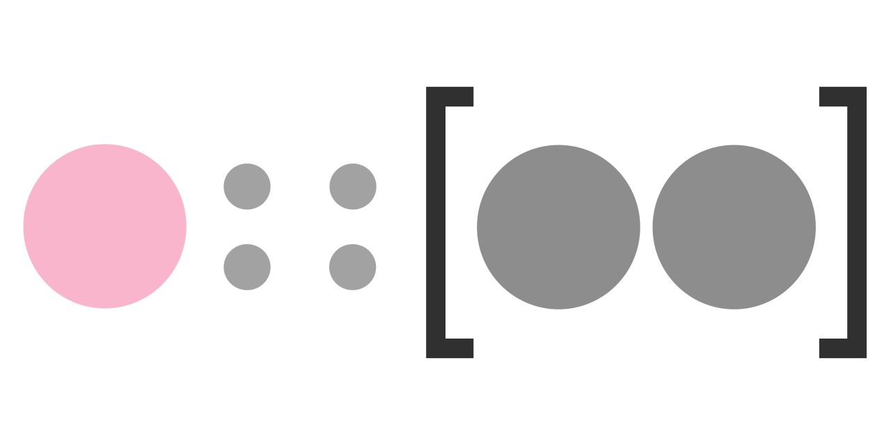
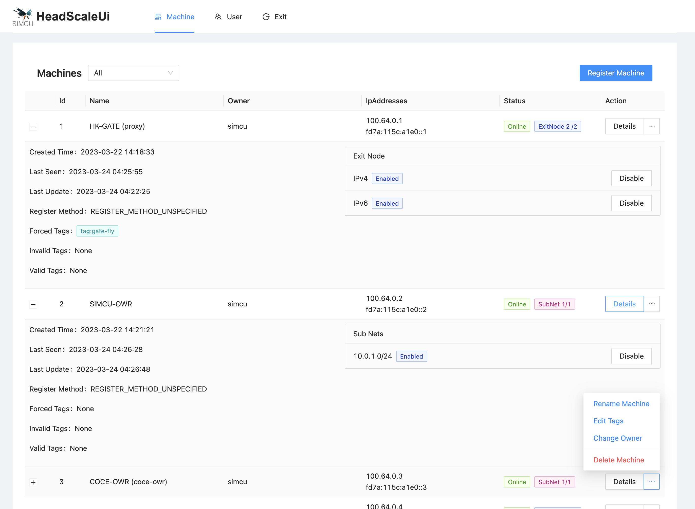
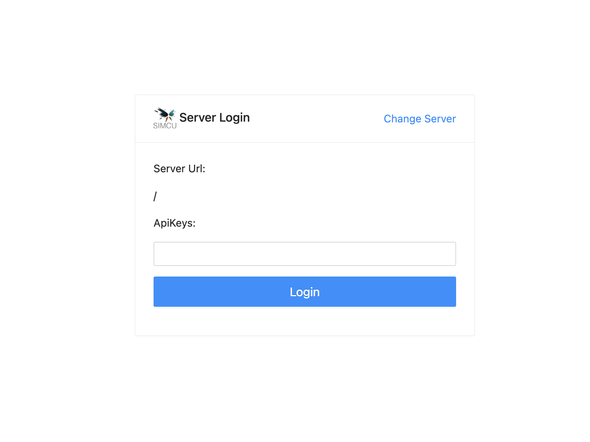

Headscale
 项目首页
项目首页
一款开源的、基于云的、用于快速部署和管理 SSH 服务器的工具。 它可以让你轻松地搭建和配置 SSH 服务器，无需复杂的服务器管理工作，尤其适用于开发者和需要访问服务器的团队。


 如何部署在线 Headscale
如何部署在线 Headscale
什么是 Headscale
- Headscale 是一个开源的、自托管的 Tailscale 控制服务器实现。Tailscale 是一个基于 WireGuard 的虚拟私有网络（VPN）服务，而 Headscale 允许用户在自己的服务器上运行 Tailscale 控制平面，从而实现自托管的 VPN 解决方案。Headscale 的目标是为自托管者和爱好者提供一个开源的服务器，用于他们的项目和实验室。
功能列表
-
DNS：
魔法DNS、
全局和受限名称服务器（拆分 DNS）、
搜索域名、
额外的 DNS 记录（仅限 headscale）
Taildrop（文件共享）
路由通告（包括出口节点）
双栈（IPv4 和 IPv6）
短暂节点
嵌入式DERP 服务器
访问控制列表（GitHub 标签“policy”）： 通过 API 进行 ACL 管理、 autogroup:internet、 autogroup:self、 autogroup:member
使用单点登录 (OpenID Connect) 进行节点注册 ( GitHub 标签“OIDC” )： 基本注册、 动态 ACL 支持、 OIDC 组不能用于 ACL
漏斗（#1040）
服务( #1234 )